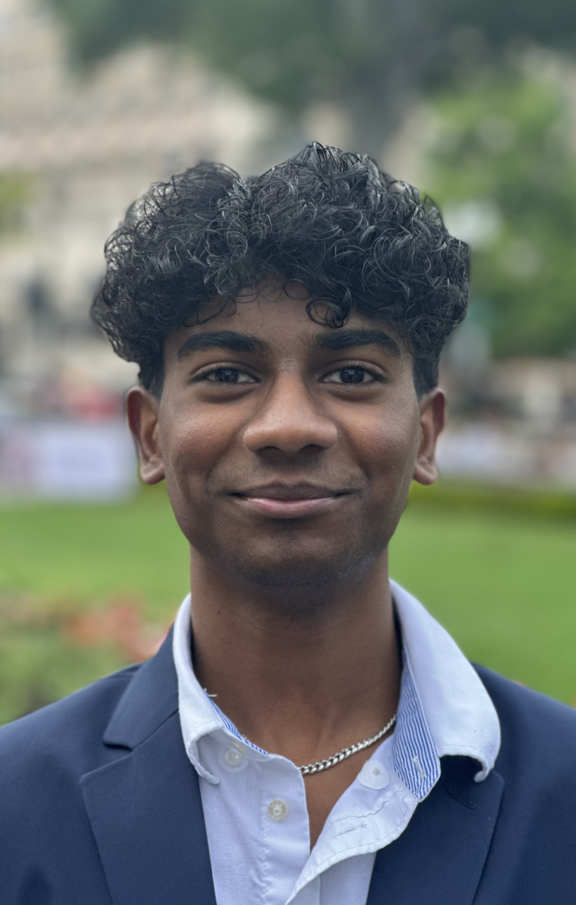

I was cooking alongside my mom when I took a bite of bread that was toasted to a crispy, buttery perfection. Inside, a generous layer of melted cheese oozed and stretched out as I pulled the halves apart to dip in the velvety tomato soup. As I took my second bite, my mom abruptly handed over her phone to me, nudging me to speak with my grandma. I quickly wiped my hands and took the phone. As I opened my mouth to speak, nothing but a dejected sigh came out: I couldn’t utter a sentence.
In Tamil, I can ask my parents “What’s for dinner?”, but can’t have a sophisticated discussion on why pineapples should never be on pizza. My inability developed into indifference to Tamil over time as I wasn’t able to communicate my full thoughts through this medium. I got all my useful recipes in English from my mom, so what did I need Tamil for?
Indifference turned to dread when I visited my grandparents in Chennai, India for their 80th birthday two summers ago as I didn’t know how to communicate with anyone. I knew relatives would jab: “Do you speak Tamil? Do you speak Tamil?” Searching for comfort in this new environment, I went into my grandparents’ kitchen to make myself a grilled cheese. As I opened the fridge, my grandmother walked in and tried to communicate in her best English:
“You know make Sambar?” she said. I loved the taste of sambar (lentil soup); its enticing fragrance of coriander, cumin, and fenugreek seeds amalgamating with carrots, potatoes, and drumsticks are tied all together by yellow dal, giving the soup a creamy texture. While I ate sambar a lot at home, I never learned the recipe.
“No,” I said.
“I show you,” she responded excitedly.
As I helped her chop tomatoes and green chilies, I had a palpable sense of curiosity mixed with apprehension. I was worried about speaking in Tamil because I didn’t want to say the wrong words, but I also wanted to share in my grandmother’s cooking. To locate the spices, I drew pictures of ingredients on the margins of the 3-year-old newspaper that lined the open cabinets. Recognizing my drawing, she directed me to the right cabinet and a game of Pictionary ensued as she drew pictures of more ingredients for me to find. I spoke back in broken Tamil and was not met with the expected jabs. At that moment, a bridge formed between generations built not just on language but on the universal language of love and understanding. Through our shared efforts in the kitchen, I was able to step into her shoes, appreciating not only her cooking style and techniques but her empathy and understanding. It was as if the flavors we were creating together were not just a symphony of tastes, but a beautiful melody of connection, binding us in a way words never could.
I have realized that this experience was much more than a meal. Through my grandmother, I’ve learned to unravel the layers that constitute each person’s unique story. By cooking with others, I have come to realize that relatability is not a static condition, but a fluid and malleable quality that can be unearthed through open-hearted engagement. Whether in my advocacy work in the DC Practice & Ethics Advisory Committee or mentoring a new student at my school, I aim to lead with empathy and a curiosity to learn more about those around me.
Cooking reminds me that beneath our apparent differences, there exists a profound interconnectedness that, when acknowledged and embraced, has the power to bridge even the widest of divides. As I embark on my journey to become a better advocate, physician, and chef, I carry with me the lessons I've learned in the kitchen with a strong belief in the power of compassion.

My future plans include pursuing a medical degree with the goal of becoming a physician who not only provides high-quality care but also works to address systemic health disparities. As an advocate for health equity, I aim to focus on underserved communities, improving access to healthcare and promoting preventative care through education and outreach initiatives. In addition to my medical ambitions, I am passionate about culinary arts and the role nutrition plays in overall health. I aspire to become a better chef, blending my love for cooking with my commitment to wellness. My long-term vision is to create a platform that bridges health, cooking, and community engagement. This platform would serve as a space where people can access nutritious, culturally relevant recipes, learn about the links between diet and health, and participate in discussions that promote healthy living, particularly in marginalized communities. Ultimately, I hope to empower others to make informed decisions about their health while fostering a sense of community and well-being.
I am deeply passionate about global health initiatives, particularly in understanding how healthcare systems can be improved to better serve underserved and marginalized communities around the world. I believe that access to healthcare is a fundamental right, yet many regions, especially in low- and middle-income countries, face significant barriers to receiving even basic medical care. My interest lies in finding innovative solutions to these challenges, from improving healthcare infrastructure to promoting health education, training local healthcare workers, and enhancing access to life-saving medications and resources. I am committed to contributing to efforts that bridge these healthcare gaps, whether through research, policy advocacy, or hands-on work in global health settings. In addition to healthcare, I am equally passionate about sustainable food systems and their critical role in promoting both human and environmental health. I believe that the way we grow, produce, and distribute food has far-reaching impacts not only on individual health outcomes but also on the health of our planet. By advocating for sustainable agricultural practices, equitable food distribution, and reducing food waste, I hope to play a role in creating systems that provide nutritious, accessible food to all while minimizing harm to the environment. My long-term vision is to contribute to initiatives that integrate sustainable agriculture with public health, ensuring that communities around the world can thrive with access to healthy, sustainable food sources. Through a multidisciplinary approach that connects healthcare, food systems, and environmental sustainability, I hope to help shape a future where both people and the planet can flourish.